U5아벨 모로 인물 그림 꼭 필요
지금: 예전 그림(어두운 배경, 비율 다름). 원하는 것: 제임스·점술마녀처럼 상반신 · 세로 3:4 · 배경 투명. 상처는 “상처 완화 대체본” 정도로.
N20_대화인물_아벨모로_3x4.png| 번호 | 그림 | 중요도 | 어디에 쓰나요 |
|---|---|---|---|
| U1 | 파티 카드 판 + 이름 줄 | 꼭 필요 | 화면 아래 캐릭터 카드 3장 — 거의 모든 화면에 항상 보임 |
| U2 | 대화 창 판 + 인물 칸 | 꼭 필요 | 모든 대화·내레이션 |
| U3 | 안쪽 판 (공용) | 꼭 필요 | 전투 전 창·행동 막대·소모품 목록·상점·인벤토리·점술 카드·기도 칸·파티 구성 카드 — 가장 많이 쓰임 (10곳 넘음) |
| U4 | 얼굴 액자 (공용) | 꼭 필요 | 파티 카드·파티 구성·인벤토리·적 카드·전투 전 창의 얼굴 칸 |
| U5 | 아벨 모로 인물 그림 3:4 | 꼭 필요 | 보스 대화 |
| U6 | 제목 띠 + 적 크기 표식 | 있으면 좋음 | 전투 전 창 (보라 마름모·보라 띠) |
| U7 | 보스 등장 띠 | 있으면 좋음 | 보스 전투 시작 |
| U8 | 작은 상자 판 | 있으면 좋음 | 알림·마우스 설명·보스 예고·의뢰·도움말·소지금 칸·입력 칸·저장 실패·상태 표시 등 |
| U9 | 목록 한 줄 (보통 / 고른 것) | 있으면 좋음 | 상점 물건 목록·인벤토리 장비 칸 |
| U10 | 주사위 칸 표식 | 있으면 좋음 | 전투 전 창 “?” 칸·굴림 결과(성공·실패) |
| U11 | 분수대 · 석상 그림 | 있으면 좋음 | 이벤트 창 왼쪽 빈자리 |
| U12 | 적 HP 카드 판 | 있으면 좋음 | 전투 왼쪽 위 (없으면 U3+U4로 개발이 조립) |
| U13 | 행동 아이콘 7개 | 시간 남으면 | 공격·스킬·소모품·방어·부활·퇴각·집중 버튼 (지금은 글자만) |
| U14 | 첫 화면 배경 + 로고 | 시간 남으면 | 메인 메뉴·파티 구성 화면 (지금 검은 바탕) |
| U15 | 창 이름 칸 (뾰족 장식 수정) | 시간 남으면 | 창 제목 |
| ① | 색은 11/10에 주신 창 틀·버튼과 같게 — 짙은 갈색 나무 + 구리색(청동) 테두리. |
|---|---|
| ② | 글자·숫자·아이콘은 넣지 말아 주세요. 빈 판만 주시면 개발이 위에 얹어요. |
| ③ | 배경 투명 PNG. |
| ④ | 장식은 네 모서리에만, 변 가운데는 무늬 없이. (이유는 아래 그림) |
| ⑤ | 크기는 아래 적은 “화면 크기”의 1~2배. 딱 맞출 필요 없어요. |
④번 이유 — 그림 1장을 늘려서 여러 크기로 써요. 주신 창 틀 그림 1장으로 아래 작은 창과 큰 창을 둘 다 만들었어요. 게임이 모서리는 그대로, 변만 늘려요. 변 가운데 장식은 늘어나며 찌그러져 보여요.
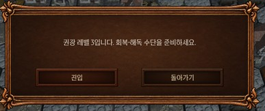
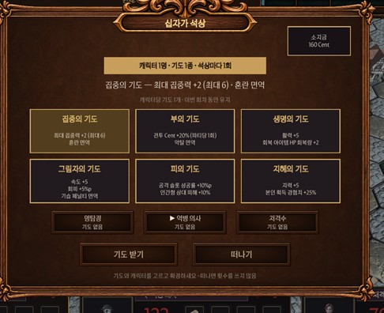
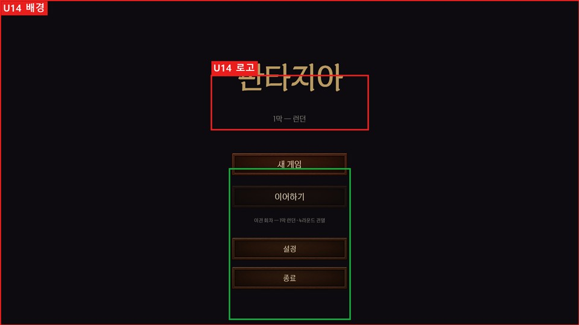
| 부분 | 상태 |
|---|---|
| 버튼 4개 | 새 그림 |
| 배경 (검은 바탕) | U14 |
| 제목 “판타지아” (글꼴 글자) | U14 로고 |
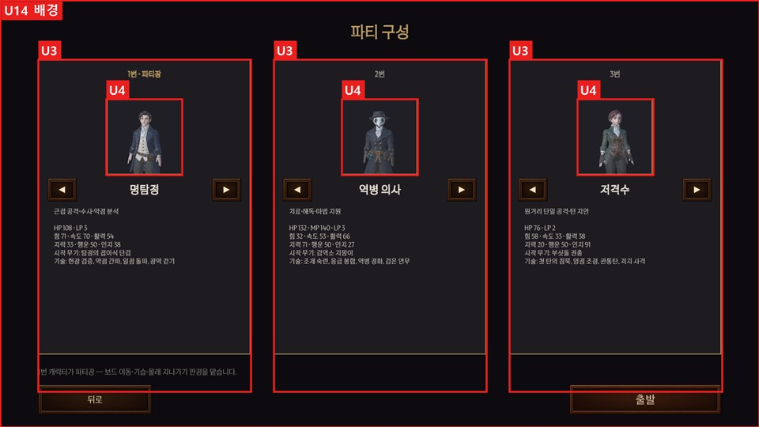
| 부분 | 상태 |
|---|---|
| 캐릭터 카드 3장 (남색 + 노란 선) | U3 |
| 캐릭터 얼굴 칸 (노란 선) | U4 |
| ◀ ▶ · 뒤로 · 출발 버튼 | 새 그림 |
| 배경 (검은 바탕) | U14 |
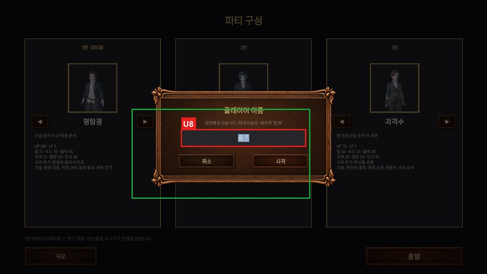
| 부분 | 상태 |
|---|---|
| 창 틀 · 버튼 | 새 그림 |
| 이름 입력 칸 (남색 상자) | U8 |
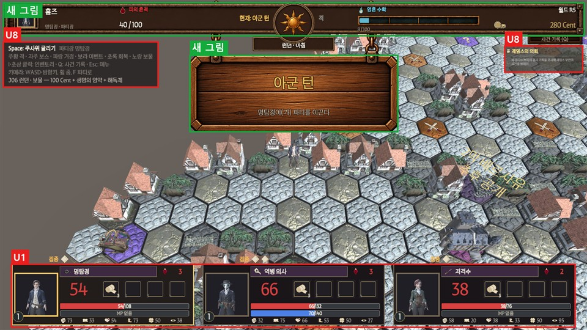
| 부분 | 지금 | 상태 |
|---|---|---|
| 상단 바 · 해/달 · 지역 이름 · 턴 안내판 · 사건 기록 버튼 | 11/10 새 그림 | OK |
| 파티 카드 3장 | 남색 판 + 보라 이름 줄 | U1 · U4 |
| 왼쪽 도움말 상자 · 오른쪽 의뢰 상자 | 회색 반투명 상자 | U8 |
| 대화 창 (아래 사진) | 회색 상자 | U2 |
| 아이템 얻음 알림 · 칸에 마우스 올리면 뜨는 설명 | 흰 상자 / 장식이 너무 무거움 | U8 |
| 저장 실패 알림 띠 | 빨간 상자 | U8 |
| 장소 정보 창 (Ctrl+우클릭) | 남색 + 파란 테두리 | 개발 (새 창 틀로) |
파티 카드 자세히 — 안에 든 작은 그림(막대·아이콘·칸)은 받은 그림이라 OK. 판·이름 줄·얼굴 칸만 바꾸면 돼요.
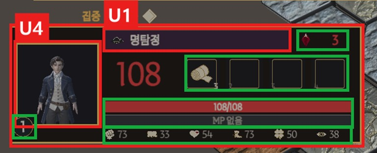
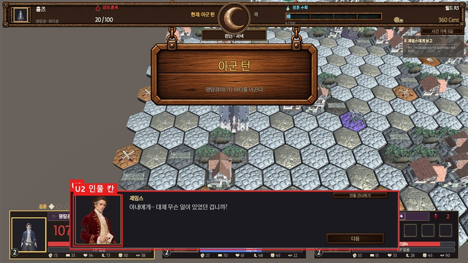
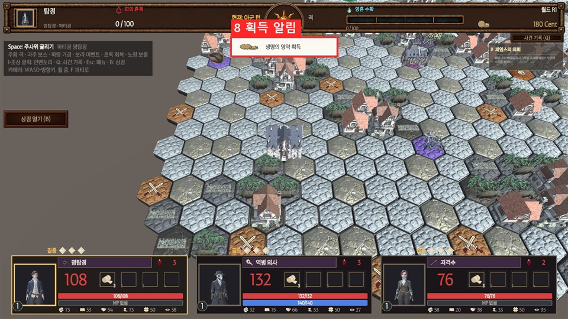
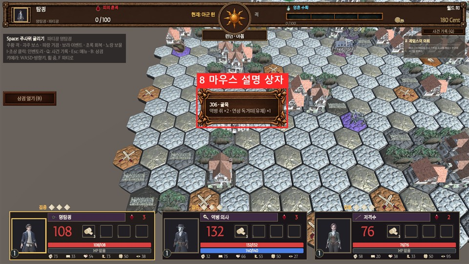
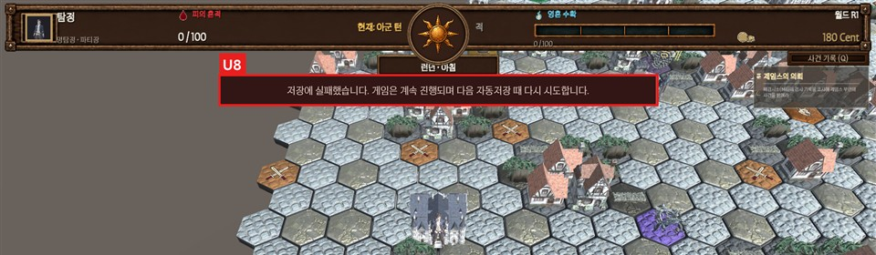
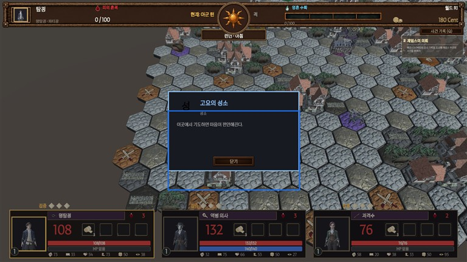
위쪽 상단 바만 새 그림이고, 나머지는 거의 다 예전 모양이에요.
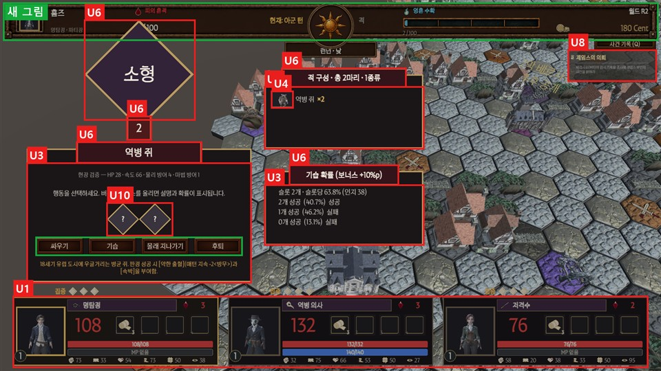
| 부분 | 지금 | 상태 |
|---|---|---|
| 상단 바 | 새 그림 | OK |
| 적 크기 표식 (“소형” 마름모) + 아래 숫자 칸 | 보라 마름모 | U6 |
| 적 이름 띠 · “적 구성” 제목 띠 · “기습 확률” 제목 띠 | 검붉은 띠 + 노란 선 | U6 |
| 왼쪽 큰 정보 판 · 오른쪽 판 2개 | 검은 판 + 노란 선 | U3 |
| 적 작은 얼굴 칸 | 회색 선 | U4 |
| “?” 기습 칸 2개 | 보라 마름모 | U10 |
| 싸우기 · 기습 · 몰래 지나가기 · 후퇴 버튼 | 새 버튼 | OK |
| 아래 파티 카드 3장 | 남색 판 + 보라 이름 줄 | U1 · U4 |
| 오른쪽 의뢰 상자 | 회색 상자 | U8 |
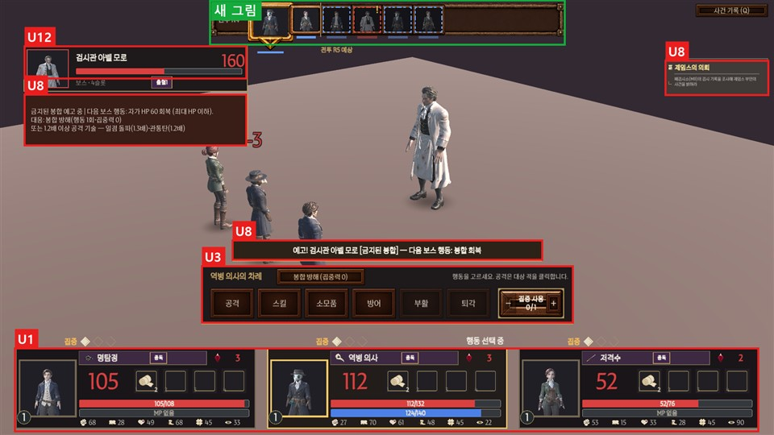
| 부분 | 지금 | 상태 |
|---|---|---|
| 위쪽 순서 띠 | 11/10 새 그림 | OK |
| 적 HP 카드 (왼쪽 위) | 검은 판 + 노란 선 | U12 (또는 U3+U4) |
| 보스 예고 상자 · 예고 띠 | 검붉은·검은 상자 | U8 |
| 행동 막대 받침 (버튼 담는 판) | 검은 판 + 노란 선 | U3 |
| 행동 버튼 (공격·스킬…) | 새 버튼, 아이콘 없이 글자만 | OK |
| 행동 버튼 아이콘 | 없음 (게임에 자리는 있음) | U13 (선택) |
| 소모품 목록 창 | 큰 빈 검은 상자 | U3 |
| 굴림 결과 창의 성공·실패 표식 | 초록·빨강·회색 마름모 | U10 |
| 상태 표시 (출혈 등 작은 칩) | 보라 칩 | U8 |
| 파티 카드 · 의뢰 상자 | 예전 모양 | U1 · U8 |
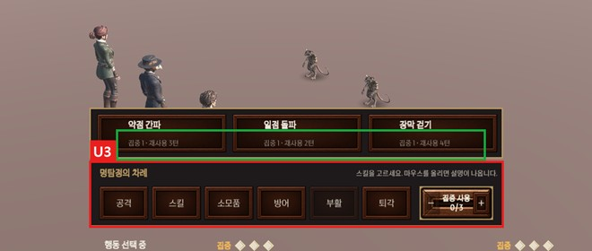
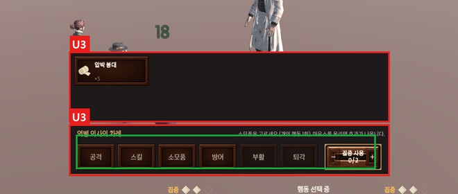
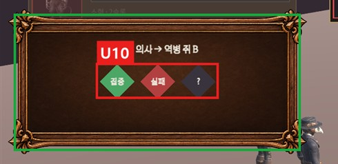
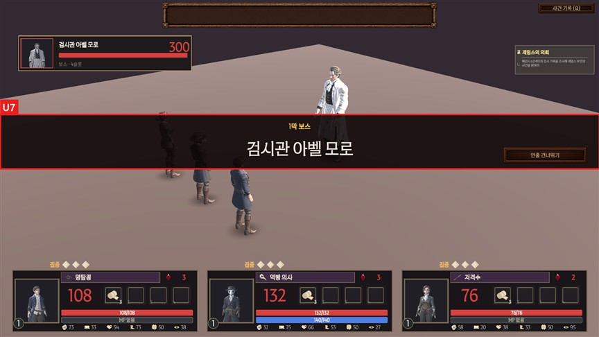
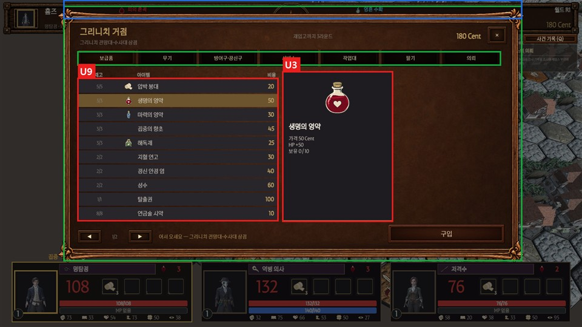
| 부분 | 지금 | 상태 |
|---|---|---|
| 창 틀 · 위쪽 탭 버튼 · 구입 버튼 | 새 그림 | OK |
| 물건 목록 줄 (보통 · 고른 줄) | 회색 줄 / 노란 줄 | U9 |
| 오른쪽 설명 판 · 동료 고르는 판 | 남색 판 + 노란 선 | U3 |
| 창 위 장식이 상단 바를 덮음 | 위치 문제 | 개발 |
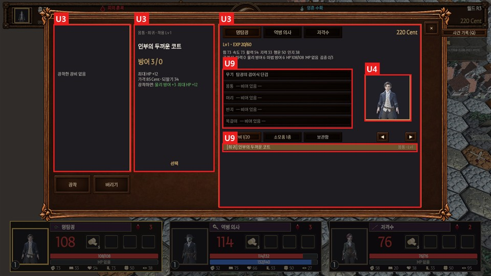
| 부분 | 지금 | 상태 |
|---|---|---|
| 창 틀 · 탭 · 버튼 | 새 그림 | OK |
| 안쪽 판 3개 | 남색 판 + 노란 선 | U3 |
| 장비 칸 줄 · 아래 목록 줄 | 검은 줄 / 노란 줄 | U9 |
| 캐릭터 그림 액자 | 노란 선 | U4 |
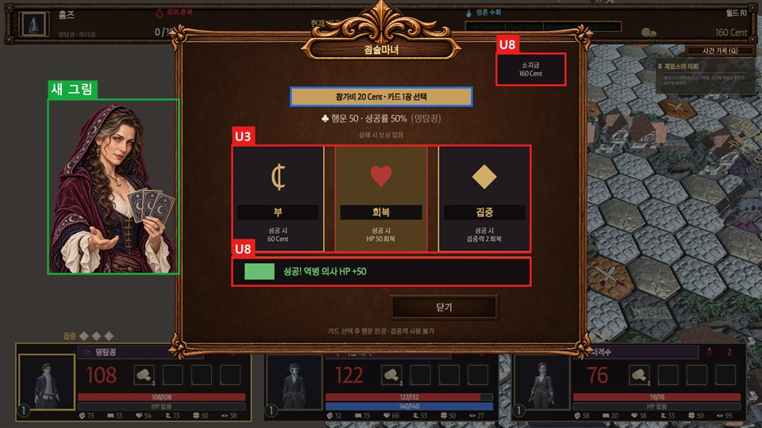
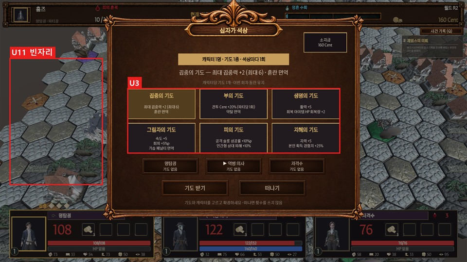
| 부분 | 지금 | 상태 |
|---|---|---|
| 창 틀 · 이름 칸 · 버튼 · 점술마녀 그림 | 새 그림 | OK |
| 점술 카드 3장 · 기도 칸 6개 | 남색 판 + 노란 선 | U3 |
| 소지금 칸 · 결과 줄 | 남색 상자 | U8 |
| 노란 안내 띠 (“참가비…”) | 밝은 노랑이 튐 | 개발 (색 맞춤) |
| 분수대 · 석상 이벤트 왼쪽 | 그림 없이 빈자리 | U11 |
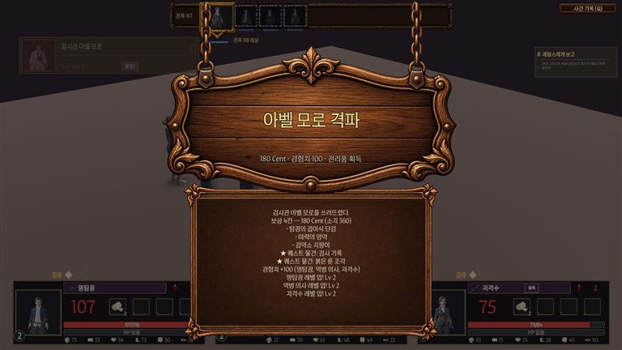
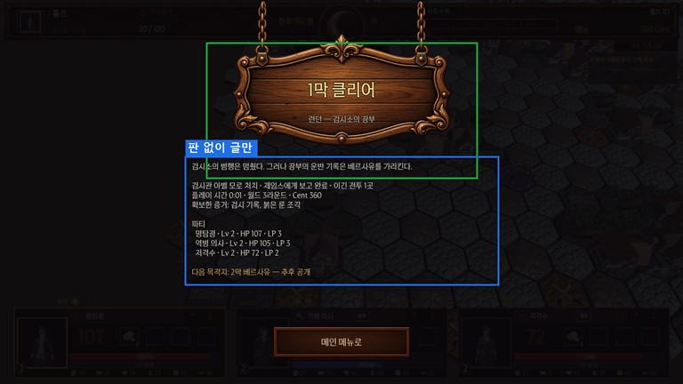
승리·패배·전멸·퇴각 표지판은 모두 OK. 1막 클리어 아래 글은 개발이 받은 창 틀을 깔게요.
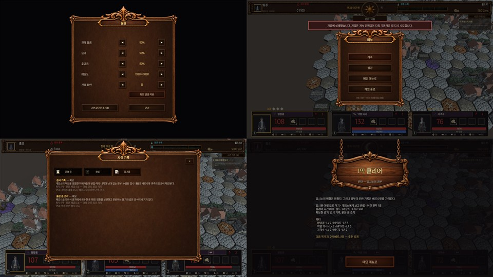
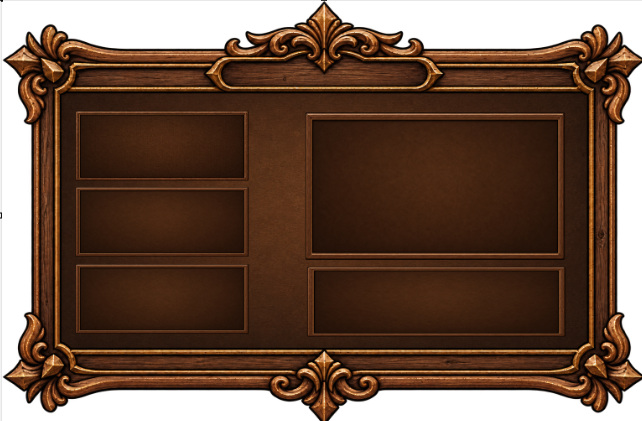
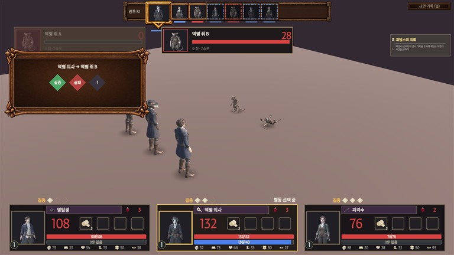
N20_대화인물_아벨모로_3x4.png
못 하시면 “아군 턴” 나무 안내판을 다시 써요.
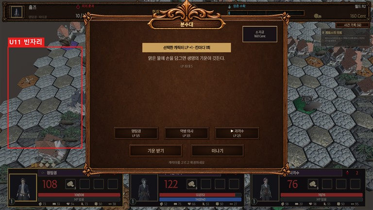
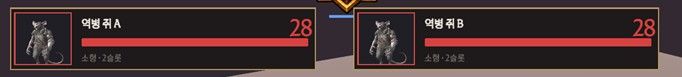
| 번호 | 파일 이름 (예) | 중요도 |
|---|---|---|
| U1 | U1_파티카드_판.png · U1_파티카드_이름줄.png · (U1_파티카드_차례테두리.png) | 꼭 필요 |
| U2 | U2_대화창_판.png · U2_대화창_인물칸.png · (U2_대화창_이름.png) | 꼭 필요 |
| U3 | U3_안쪽판.png · (U3_안쪽판_고름.png) | 꼭 필요 |
| U4 | U4_얼굴액자.png | 꼭 필요 |
| U5 | N20_대화인물_아벨모로_3x4.png | 꼭 필요 |
| U6 | U6_적크기_표식.png · U6_숫자칸.png · U6_제목띠.png | 있으면 좋음 |
| U7 | U7_보스등장_띠.png | 있으면 좋음 |
| U8 | U8_작은상자.png | 있으면 좋음 |
| U9 | U9_목록줄.png · U9_목록줄_고름.png | 있으면 좋음 |
| U10 | U10_주사위칸.png | 있으면 좋음 |
| U11 | U11_분수대.png · U11_석상.png | 있으면 좋음 |
| U12 | U12_적카드_판.png | 있으면 좋음 |
| U13 | U13_공격.png · U13_스킬.png … (7개) | 시간 남으면 |
| U14 | U14_메뉴배경.png · (U14_로고.png) | 시간 남으면 |
| U15 | U15_창이름칸.png | 시간 남으면 |
보내는 곳: 공유 폴더 판타지아_팀원공유 또는 개발에게 바로. 궁금한 점은 언제든 물어봐 주세요.
| 무엇 | 어떻게 |
|---|---|
| 큰 창(상점·인벤토리·석상 등) 위 장식이 상단 바 글자를 가림 | 창을 조금 아래로 |
| 전투 순서 띠가 칸보다 길어 오른쪽이 빔 · 전투 시작 전엔 빈 띠만 보임 | 길이 맞춤 · 시작 전엔 숨김 |
| 주사위가 “아군 턴” 안내판 위로 굴러감 · “저지!” 글자가 순서 띠와 겹침 | 위치·순서 조정 |
| 점술 창 밝은 노란 안내 띠 | 색 맞춤 |
| 장소 정보 창 · 1막 클리어 아래 글 | 받은 창 틀로 바꿈 |
| 아이템 얻음 알림이 상단 바 뒤에 가려 안 보였음 | 고침 (11/10) |
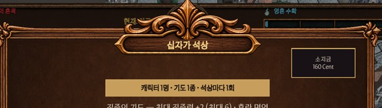
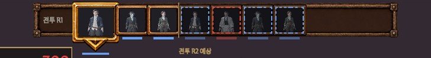
점검 방법: 게임을 자동으로 돌려 메뉴·보드·전투 전·전투·보스·상점·인벤토리·이벤트·사건 기록·결과 화면 157장을 찍고, 화면마다 모든 부분을 하나씩 확인함.